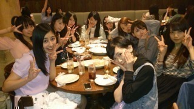
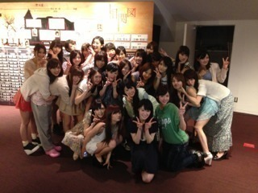

2013/0513Mon明日は明日の風が 吹く！
プリンシパル東京公演、
無事、千秋楽を終えました！！
乃木坂カンパニーの皆さん、
本当にお疲れ様でした！
打ち上げわず(σ´∀｀)σ

この机周りは胃袋が大きい人たちの
集まりでした(*ﾟﾛﾟ)!!
私は...
稽古で誠一役をいっぱいやらせて
もらった時から、
千秋楽は絶対誠一役をやりたいと
思ってました(>_<)
本当に思い入れの強い
役だったのです！
今日は昼はみさこ役に、
夜は誠一役に
2幕で選んでいただけて
嬉しかったです(T_T)
感無量でございますT^T
この期間中
辛かったこと、
楽しかったこと、
学んだこと、
感想は山ほどありますが、
とりあえずは
怪我なく無事に終われてよかった！
あと最近ずっと感じてたんだけどね、
この公演をきっかけに本当に
メンバーみんなのことが
大好きになったの！！
ずーっと一緒にいては
同じように悩んで、
同じように努力して
辛い時は励まし合ってきて...
本当にみんなで頑張ったね(T_T)
↑誰だよって感じかな？笑
明日からみんなに会えないと思うと
実は結構さみしい...(T_T)
でもまだ大阪もあるし、
頑張りましょう！！！
明日は久しぶりに
陽菜ちゃんと遊びまーす♪
楽しみです( ´ ▽ ` )
それでは、
本当にお疲れ様でした！
ありがとうございました(T_T)
これからも、応援
よろしくお願いします！！！

2013/05/13 01:12


コメント(541)
こんばんわ(=゜ω゜)ノ
プリンシパルお疲れ様でした☆
千秋楽。
やっぱりかずみんは流石の存在感でした☆
ひとまずゆっくり体と頭を休めてくださいね(゜-゜)
お疲れ様！！
土曜日の夜に見に行ったよー！
役としての姿は見れなかったけど、
女中としてがんばってるかずみんを
見ることができたから
ほんといってよかった(●´ω｀●)
LIVEも楽しかったー(*°▽°*)
大阪公演もがんばってね！
期待してます( ´ ▽ ` )ﾉ
プリンシパル東京公演終わったねー！！
お疲れ様＼(^o^)／
今までレッスンとかで休む暇もなかっただろうからゆっくり休んでね！！
まだ大阪公演終わってないから気は抜けないけどね。
僕はプリンシパル二回観に行きました！！
かずみんの演技間近で観れてよかったよー！！
今日はゆっくり休んで(^o^)/
おやすみ(*^o^*)
こんばんは♪
プリンシパルお疲れ様でした！
千秋楽見に行きました！
ホントにサイコーでした！
明日も頑張ってください(^-^)/
では、お休みなさい(-.-)Zzz・・・・
そして、本当に楽しい時間をありがとうヾ(＠⌒ー⌒＠)ノ
歌もダンスも上手くて、可愛いくて面白い、そんなかずみんの魅力を存分に味わえた最高の公演だったよ*･゜ﾟ･*:.｡..｡.:*･'(*ﾟ▽ﾟ*)'･*:.｡. .｡.:*･゜ﾟ･*
まだ梅田公演があるけど、ひとまずは赤坂公演本当にお疲れさま！
今はゆっくり休んで欲しいな( ´ ▽ ` )
自律神経に針ぶっ刺して疲れ取ってね（笑）
最新の高山が最高の高山。
しばらくはゆっくり
休んでください♪
怪我がないのはホントに良かった！
東京は行けなかったけど、大阪は行くから楽しみにしてるよー！
これからもがんばれ!!!
かずみんのみさこさん役やばかった！さすがかずみんですな(*^_^*)
お疲れ様でした！
どうも、僕です。
プリンシパルお疲れ様です(^^ゞ
なんかあっという間やったね
今回はメンバーの新たな一面も垣間見えてより乃木坂が好きになったわ！
打ち上げむっちゃ楽しそうo(^o^)o
今日も１日お疲れ様です
僕から以上。
かずみんお疲れさん。
昼観たんだけどオーディションでは沢山笑わせて頂きました(笑)
2幕のみさこもかずみんらしさが出てて見入ったよ◎
長い東京公演ホントにお疲れさま！！
喉はゆっくり休めてね(^^)d
デワデワっち(￣^￣)ゝ
ブログ更新待ってました！
かずみん＼(^o^)／
プリンシパル最終日
お疲れ様です(((o(*ﾟ▽ﾟ*)o)))
みにいったけど…
めっちゃよかったです(^-^)/
さらに乃木坂が好き
になっちゃいました(>_<)
じゃあまたねー☆
大阪公演も頑張ってね！
ずーっと応援してますね！
東京公演お疲れ様でした！
辛いこともたくさん
あったと思いますけれど、学んだ事の方が
あったんじゃないかと思います！
メンバー皆さんの成長した姿を
早く握手会等で見れるのを楽しみにしときます♪
とりあえず、怪我なく無事に終わって
ほんとにホッとしましたっ(^-^)/
大阪公演は自分も観に行きますねっ♪
ほんとにお疲れ様でした～(*^^*)☆
打ち上げ楽しそう〜
混ぜてほしかったな(笑)
おつかれおつかれホントお疲れ。
長かった公演だったんじゃないかな。
それとも短い公演だったのかな。
大阪公演で初めてみさせてもらうことになるのだけど、東京公演よりもより役作りに磨きをかけて挑んでください。
俺はそれを目撃することになる。フッ。
明日から休み。
とりあえず休もう。
喉を休めよう。
喉に栄養を与えよう。
そして。。。遊べじゃ～～～～。
寝ずに遊べじゃ～～～～。
うそ。
じゃ～～～。
わざわざ京都から赤坂まで見に行ったかいがあったよー( ´ ▽ ` )ﾉ
梅田プリンシパルほんと楽しみにしてるね！
千秋楽お疲れ様(_´Д｀)ﾉ~~
個人戦に見えて結構皆で支え合ってたんだね。
明日のデート楽しんでら( ^ω^ )
また明日からも学校頑張るねー
ではでは
明日は明日の風で喉カラカラにしないでじゃ～～～～(^^♪
へい。
マスク。
公演お疲れ様♪
昼公演観に行ったけん、みさこ役のかずみん見れてよかったやぁ♪
演技よかったよ！
ゆっくり休んで大阪公演も頑張ってね♪
プリンシパルお疲れ様！！
結果なんてどうだっていい。
本当に悩んで辛くて苦しかったはず。
それでもやりきったっていう事がいつか財産になるときが必ずくるから。
今日まで本当にお疲れ様(^^)
見たかったな(._.)
ゆっくり休んで、また笑顔で皆の前に顔みせてくれたら嬉しいです(^^)
本当にお疲れ様m(._.)m
千秋楽おつかれさん!!
最後はバンドのメンバーと見に行ったよ～。
何だかんだ皆楽しんでたよ☆
ありがとう！
俺、今回の公演見に行って気づいた事あってさ勝手に満足してる 笑。
日村さんも見に来てくれて良かったね(^^)
まだ大阪公演あるし6thの制作もあるしで大変だと思うけど…
楽しんじゃおう!(^^)!笑
またね~
かずみん こんばんは ( ´ ▽ ` )ﾉ
東京公演千秋楽
そしてこの10日間おつかれさま！
最後の公演で1番思い入れの強い誠一役を演じられてよかったね *\(^o^)/*
本当に怪我とかなく終われてなにより！
自分は直接観に行くことはできなかったけど
観に行ったファンの心には
きっと一生残る思い出になっただろうね （≧∇≦）
自分も将来は
そうやってたくさんの人の記憶に素敵な思い出をたくさん残して
それぞれの人生に影響を与えられるような仕事がしたいなぁ (^_^*)
そういう意味では
アイドルって職業が時々すごく羨ましく感じる！笑
メンバーとの絆もより一層強くなったんやね！
ゆみ姉 も観に来てくれてたらしいし
乃木坂ってほんとに素敵なグループ！アメイジング＼(^o^)／
明日は久しぶりの息抜きになると思うし
ひなぴょん と楽しんできてね (*^^*)
そして大阪公演でも頑張って！
10日間おつかれさま(^o^)/
初日と千秋楽観に行きました！
誠一を演じてるかずみんは
楽しそうでほんとにステキでした！
これからは二期生も加わって
いろいろ大変だと思いますが
かずみんらしく頑張って欲しいです！
ずーっと着いて行きます＼(^o^)／
公演後のライブでは
初日はタオル、千秋楽ではうちわ
持ってたのですが気づいてもらえたかなー？
女性エリアでかずみんの正面にいましたー！
レスももらって幸せでした。
幸せな時間をありがとうございました。
これからも頑張ってください(*^^*)
東京公演千秋楽お疲れさま
打ち上げいいね〜
胃袋が大きい人たちの集まり（笑）
やっぱりかずみんは誠一の印象が
すごく強かった
初日かずみんの誠一役をみて
かっこいいなと
今日は昼公演見たけど
かずみんのみさこ役よかったよ
いつもとは違うと言うか
新鮮だったというか（笑）
おじいさまで遊び過ぎね（笑）
ずっと見てたよ〜
今回のプリンシパルは見ている側の
俺らもすごく感じることが多かったです。
メンバーの真剣な顔、普段は見られない
演技など。
本当怪我なく無事に終われてよかった
メンバーはライバルであり仲間だからね
お〜明日は陽菜ちゃんとデートか
楽しんできてね
東京公演お疲れさまでした
ゆっくり休んでね
ではでは〜おやすみ
はしもー
かずみさん大好き！
いやあ
お疲れさまです。
初めてかずみ誠一見たけど思った通りの好演でしたね。
ブログタイトルは吹くになってるけど、
公演では明日は明日の風が"来る"って言ってたね(笑)
まあんなことはどうでもいいや
とにかくお疲れさまでーす！
大阪公演も頑張ってちょんちょろりーん(∵)
本当にお疲れ様♪
きっとこの10日で
すごく成長できたんだと
思います。まだ大阪公演
があるけど、とりあえずは
ゆっくり休んでください。
お疲れ様でした！！
そして、乃木どこの
放送見ました♪みんなの
回答面白すぎ最高でした。
これからも
頑張ってください。
応援してます♪
東京公演おつかれさまでした＼(^o^)／
かずみん♪.メンバーほんと！
がんばったね
ゆっくりしてね(*^^*)
プリンシパル公演、怪我が無くてホントに良かったです。
メンバーみんなのことが大好きになったと書いてあって、自分も何か嬉しいっす笑
これからも、頑張ってください！応援してますよー！！かずみん大好きです笑笑
明日は明日の風が吹く！
……いい言葉じゃありませんか。
こんばんわ♪
千秋楽～♪ お疲れ秋刀魚！(≧∀≦)ゝ
お疲れさま(^_−)−☆
最後、思い入れの強い役演じれてよかったね(*^_^*)
なんていうか……自分の中で特別な思いがあることって気合の入り方違うよね(^^)
てかみんなで1つのことに集中してやりきるってこと、そんなにないもんね……
高校の体育祭とかが最後かなぁ（笑）
仲間との友情が深まるよね！
友達のこと大好きになるって気持ち分かる(^O^)／
最後の大阪も頑張ってね(*^^*)
今回は行けんかったけど、応援しとるよ‼
じゃゆっくり休んでね(-_-)zzz
おやすみ( ´ ▽ ` )ﾉ
プリンシパル、お疲れさま！
そして、誠一での
有終の美、おめでとうo(^^)o
みんなで打ち上げいいね♪
プリンシパルは
二回ほど行ったけどかずみんには
いっぱい笑わせてもらったよ(^^)
一回は誠一役、もう一回は残念な結果
だったんだけどやっぱりかずみんの
キャラクターは際立ってたし
頑張ってる姿を見て
推しててよかったって思えたし
もっと応援していこうって思えたよ！
なにより、見てて面白くて
幸せな気分になれました♪
二回目いったときは
かずみんと目があった気がしたんだけど
席遠かったから、多分俺の勘違い(>_<)笑
あと思ったのが
最後のミニライブでのかずみんが
すごい楽しそうで見てて癒されたよ！
シャキイズムで
陽菜ちゃんとじゃんけんしてたところとか
ホントに楽しんでる感じが出てて
こっちまで楽しくなれました(^^)
ああいう表情見れると
来てよかった！って思えたよ♪
みんな、大変だったと思うけど
しっかりやりきって
絆も深まったみたいだね！
これからも
もっとみんなで成長できるといいね♪
大阪は見に行けないけど
結果しっかりチェックして
遠くから応援してるからね！
大阪でも頑張れ！
陽菜ちゃんと遊ぶんだ！
それ、陽菜ちゃんがブログで
明日は楽しみなことがあるって
クイズにしてたけどかずみん、
答え言っちゃってるね笑
長々書いちゃってごめんなさい(>_<)
最後にやっぱり俺にはかずみんが
一番輝いて見えたよ、二回目になるけど
プリンシパル東京公演お疲れさま(^-^)
大阪公演までは少し休んで
また頑張ってきてね！
応援してるよ♪
とりあえず明日は
陽菜ちゃんと楽しく遊んできてね♪
では、おやすみなさい(-.-)Zzz・・・・
またコメントするね♪
そうだ、今日の乃木どこ？も
かずみん、笑いとっててよかったよ！笑
では、ホントにおやすみなさい！
長々ごめんね、チクより
題名カッコいいね(≧∇≦)
今日の昼夜見に行ったけど感動したよ
誠一役のかずみん、ほんと良かったよ♫
一先ず、ゆっくり休んで美味しいもの食べて遊んでください☆
大阪公演で待ってます！
大阪で待ってま～す
色々大変だったと思うけど千秋楽まで本当にお疲れ様！
次は大阪での公演だけど、大阪でも怪我なく頑張ってくださいね！
応援してます！
Fight
かずみんお疲れさま～！
メンバー全員で頑張って
メンバー全員で悩んで
メンバー全員で苦しんで
メンバー全員で乗り越えた！！
それが乃木坂の成長だよね(≧∇≦)
もう一回り成長出来るように
大阪でも頑張ってきてね(^^ゞ
ほなまた
しかもみさこ役のかずみんみれてよかったよーーー
握手会で会うのが楽しみだわ!!
明日は飴鞭コンビで遊ぶんだ～～!!たのしんでね！
ゆっくり休んでね!
おやすみグットナイト！
東京公演、
本当にお疲れ様( ´▽｀)ノ
俺は８日の公演を観に行きました。
皆、なかなか安定した芝居ができていて、非常に見やすかったよ！
しばしの間、しっかりと休んで、
大阪公演も皆で乗り切ってね！
応援してるよ（ °∇^）b
こんばんは=^・^=
プリンシパル東京公演千秋楽
お疲れ様でした(^^ゞ
最終日公演は誠一さんだと思ってました。
ホントだよ(^.^)b
かずみんのガジがめっちゃ感じられこちらも勇気をもらえましたp(^^)q
明日は相棒とのデート楽しんでください!!
かずみさん♪
またね(*・ｘ・)ノ~~~♪
コメントする